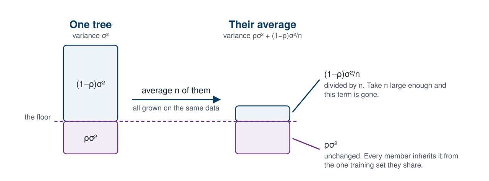
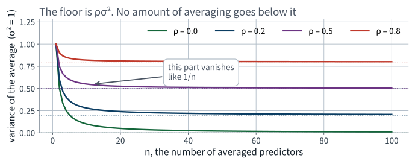
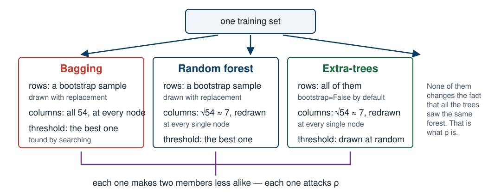
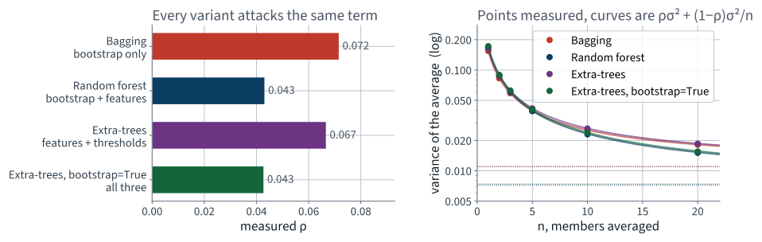
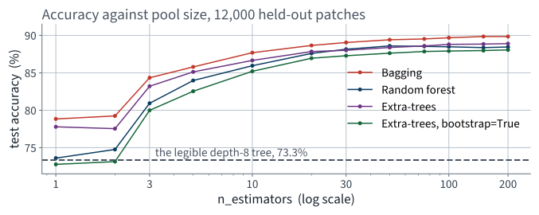
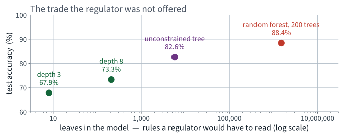
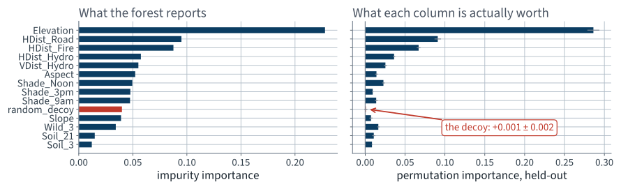

Forest CoverType · many models, and what averaging can and cannot do
Lecture 7 Géron Ch. 6
Applications of Machine Learning
BSc Mathematics of Artificial Intelligence · Third year
The previous lecture built a decision tree on this same dataset — 60,000 patches of forest, 54 cartographic columns, seven species, split 48,000 / 12,000.
| Forest CoverType | Test accuracy | Conditions per justification |
|---|---|---|
| Always “Lodgepole Pine” | 48.8% | 0 |
| Depth-8 tree, minimum leaf 20 | 73.0% | 7.97 |
| Unconstrained tree | 82.6% | 17.88 |
Nothing on that table is wrong. It is also not the whole story, and the missing part is what today repairs.
A stable metric, an unstable model. In the language of Lecture 5’s decomposition, this is variance: sensitivity of the fitted function to the particular training sample.
The whole of today follows from one question: what does averaging do to variance?
Block 2 is three lines of algebra and it predicts the shape of every measurement in block 3. It also declines to predict one of them, which is the most instructive slide of the lecture.
First ten minutes
10 minutes
Ask a difficult question of a thousand random people and aggregate their answers. The aggregate is often better than an expert’s. The same is true of models, and it has a name: an ensemble.
“Sufficiently diverse” is doing all the work in that sentence, and it is the informal name of a quantity we are about to define. Twenty minutes from now it will have a symbol, a formula and a measured value on this dataset.
CART is deterministic: same data, same tree. To get twenty different trees you must give them twenty different things to look at.
| Source of difference | Name |
|---|---|
| Different training algorithms on the same data | a voting classifier |
| The same algorithm on different random subsets of rows, drawn with replacement | bagging |
| … drawn without replacement | pasting |
| … plus random subsets of columns at each split | random forest |
| … plus random thresholds | extra-trees |
The list is in increasing order of how hard it works to make two members unlike each other. That ordering is not an accident, and the next block says exactly what it is for.
The mathematics
One result. It explains bagging, the feature subsampling in random forests, and the random thresholds in extra-trees — all three
20 minutes · examinable
Forget trees for ten minutes.
You have $n$ predictors of the same quantity. Each has variance $\sigma^2$. You average them.
What is $\operatorname{Var}(\bar{f})$?
That middle step is valid only when the $f_t$ are uncorrelated.
The variance of a sum is the sum of the variances plus twice the sum of the covariances. Dropping the covariances is an assumption, and it is exactly the assumption that fails for an ensemble of trees grown on the same dataset.
With $\operatorname{Var}(f_1) = \operatorname{Var}(f_2) = \sigma^2$ and $\operatorname{Corr}(f_1, f_2) = \rho$:
The general case has the same two limits in it. It is worth seeing them here first, where the algebra is one line.
Assume the $n$ predictors are identically distributed — each with variance $\sigma^2$ — and have a common pairwise correlation
Equivalently $\operatorname{Cov}(f_s, f_t) = \rho\sigma^2$, since both have the same variance.
Identically distributed, not independent. That is the whole point: $n$ trees grown on bootstrap samples of one dataset have the same distribution and are certainly not independent — they were handed the same dataset.
There are $n^2$ terms in that double sum. Split them by whether $s = t$:
That is the only combinatorial step in the derivation, and it is the one worth getting right on paper.
Write $\dfrac{n-1}{n} = 1 - \dfrac{1}{n}$ and gather the two $1/n$ terms:
The variance of an average of $n$ identically distributed predictors with pairwise correlation $\rho$
| Term | Depends on $n$? | What it is |
|---|---|---|
| $\rho\sigma^2$ | no | the part every predictor shares |
| $(1-\rho)\sigma^2/n$ | yes, like $1/n$ | the part each predictor has to itself |
Averaging destroys the independent component and leaves the correlated one completely untouched.
Note what this does not say. It says nothing about bias. An average of $n$ biased predictors is exactly as biased as one of them — which is why the members will be unconstrained trees.

Everything above the dashed line can be averaged away. Nothing below it can.
| Case | Variance of the average | Reading |
|---|---|---|
| $\rho = 0$ | $\sigma^2/n$ | independent: the classical result |
| $\rho = 1$ | $\sigma^2$ | identical predictors: averaging is a no-op |
| $n \to \infty$ | $\rho\sigma^2$ | the floor — and it is reached quickly |
Because the second term falls like $1/n$, most of the available reduction happens in the first few predictors. Going from $n = 1$ to $n = 10$ removes 90% of the independent part; going from 100 to 1,000 removes 0.9% more.

Four curves, four floors. The floor is set entirely by $\rho$ — which is why every ensemble variant you are about to meet is an attempt to lower it.
Point 4 is the one that gets forgotten, and it is the one we will measure — and be embarrassed by — in the third block.
The method
40 minutes · examinable
Combine different algorithms fitted to the same data.
from sklearn.ensemble import VotingClassifier
vote = VotingClassifier(
[("tree", DecisionTreeClassifier(random_state=42)),
("logreg", LogisticRegression(max_iter=1000)),
("knn", KNeighborsClassifier(n_neighbors=5))], voting="soft")
voting="hard" — majority of the predicted labelsvoting="soft" — average of the predicted
probabilities; usually better, because a confident member outweighs
several hesitant onesDifferent algorithms make different kinds of errors, which is the informal way of saying $\rho$ is small. The formula applies unchanged.
Bootstrap aggregating. Draw $m$ rows from the training set with replacement, fit a tree, and repeat $n$ times.
Pasting is the same thing without replacement. It produces less diverse members, so bagging usually wins — but it is a cheap thing to cross-validate rather than assume.
from sklearn.ensemble import BaggingClassifier
bag = BaggingClassifier(
DecisionTreeClassifier(random_state=42), # unconstrained members
n_estimators=200, bootstrap=True, oob_score=True,
random_state=42, n_jobs=-1)
bag.fit(X_train, y_train)
print(f"out-of-bag {bag.oob_score_:.1%}")
The members are unconstrained trees. We want each one to have low bias, because averaging cannot remove bias — and we are about to average the variance away, so there is no reason to restrict their depth.
Each member never sees about 37% of the rows — its out-of-bag instances. Score each member on its own out-of-bag rows and you have a generalisation estimate with no validation split and no extra fit.
Cheap, and it does not replace the test set. It replaces the validation set. If out-of-bag comes out much better than the test score, something in your pipeline saw the out-of-bag rows anyway.
bootstrap=False — the extra-trees default —
there are no out-of-bag rows and oob_score=True raisesBagging, plus one more source of difference: at every node of every tree, only a random subset of the features is considered for the split.
from sklearn.ensemble import RandomForestClassifier
rnd = RandomForestClassifier(n_estimators=200, max_features="sqrt",
random_state=42, n_jobs=-1).fit(X_train, y_train)
max_features="sqrt" is the classification
default: $\lfloor\sqrt{54}\rfloor = 7$ of the 54 columns, drawn afresh at each
node. A tree with 200 nodes therefore draws 200 different subsets.
One further step. Having chosen the candidate features, do not search for the best threshold — draw one at random for each candidate and keep the best of those.
bootstrap=False — the
random thresholds replace the bootstrap rather than joining
itThat default is a decision somebody else made, it is not what most descriptions of extra-trees imply, and we are going to measure what it costs rather than argue about it.

Rows, columns, thresholds. Three knobs, and all three are turned for the same reason.
That is the payoff of the derivation, and it is the thing to remember if you remember one thing from this lecture.
It is also a claim, and this course does not accept claims. Measure it.
$\rho$ is the correlation between two members over the randomness of the whole procedure — which includes which training set you were handed. Two trees grown on one dataset are correlated through that dataset.
So a single training set cannot show it. Conditional on the data, the members are independent by construction and $\rho$ would measure as zero.
for k in range(20): # 20 disjoint training sets
idx = pool[k * 20_000:(k + 1) * 20_000]
model = make_ensemble(kind, n=20, seed=1000 + k).fit(X[idx], y[idx])
for j, member in enumerate(model.estimators_):
S[k, j] = (classes[member.predict(X_test)] == y_test)
# S has shape (20 training sets, 20 members, 12,000 test patches)
$S_{k,j,i} = 1$ when member $j$ of ensemble $k$ is right about patch $i$. Two indices of randomness: which training set, and which member given the set. That is exactly the split the formula needs.
At each test patch, decompose the variance of a single member across all 400 fitted trees:
>>> rnd.classes_ # the ensemble's labels
array([1, 2, 3, 4, 5, 6, 7])
>>> rnd.estimators_[0].classes_ # one member's labels
array([0., 1., 2., 3., 4., 5., 6.])
predict returns
positions, not cover types. Compare them with
y_test directly and every member scores about 8% — which
looks like a terrible model rather than a bug.
classes_[member.predict(X)] maps it back.
Print the two arrays side by side any time you reach inside an ensemble.
not examinable — engineering It is a library convention, not a property of the method — but it costs an afternoon the first time.

The points are measured and the curves are $\rho\sigma^2 + (1-\rho)\sigma^2/n$. Nothing was fitted to make them line up.
| Ensemble | $\sigma^2$ | $\rho$ | Var of the average of 20, measured | … predicted |
|---|---|---|---|---|
| Bagging | 0.1542 | 0.072 | 0.01814 | 0.01819 |
| Random forest | 0.1675 | 0.043 | 0.01508 | 0.01523 |
| Extra-trees | 0.1648 | 0.067 | 0.01859 | 0.01867 |
Extra-trees, bootstrap=True | 0.1735 | 0.043 | 0.01554 | 0.01570 |
Measured and predicted agree in the third decimal place, on all four. The derivation from twenty minutes ago is a description of this dataset.
Agreement this good is partly luck — the formula assumes every pair has the same $\rho$, which is only approximately true. Do not expect three decimals every time.
| Ensemble | Rows | Columns | Thresholds | $\rho$ |
|---|---|---|---|---|
| Bagging | bootstrap | all 54 | best | 0.072 |
| Extra-trees (default) | all | 7 of 54 | random | 0.067 |
| Random forest | bootstrap | 7 of 54 | best | 0.043 |
Extra-trees, bootstrap=True | bootstrap | 7 of 54 | random | 0.043 |
Every variant is below bagging, so the claim survives. But read the last two rows: adding random thresholds on top of a random forest moves $\rho$ from 0.043 to 0.043. The mechanisms are not additive.
| Ensemble | One member | Average of 20 | Removed | Floor $\rho\sigma^2$ |
|---|---|---|---|---|
| Bagging | 0.15453 | 0.01814 | 88.3% | 0.01103 |
| Random forest | 0.16734 | 0.01508 | 91.0% | 0.00721 |
| Extra-trees | 0.16439 | 0.01859 | 88.7% | 0.01098 |
Extra-trees, bootstrap=True | 0.17248 | 0.01554 | 91.0% | 0.00740 |
Twenty members remove about nine tenths of a single member’s variance. Going to two hundred would remove roughly one twentieth more, and then stop — exactly what $(1-\rho)\sigma^2/n$ says.
| 200 members, 48,000 training patches | 10 members | 200 members |
|---|---|---|
| Bagging | 87.7% | 89.8% |
| Extra-trees | 86.7% | 88.9% |
| Random forest | 85.9% | 88.4% |
Extra-trees, bootstrap=True | 85.2% | 88.0% |
| The legible depth-8 tree | — | 73.0% |
| Always “Lodgepole Pine” | — | 48.8% |
Every ensemble beats the constrained tree by at least fifteen points, and the unconstrained tree by at least five. The last 190 members buy about two.

Most of the gain arrives by thirty members, exactly as $(1-\rho)\sigma^2/n$ says it should.
| Ensemble | $\rho$ | One member’s accuracy | Ensemble accuracy |
|---|---|---|---|
| Bagging | 0.072 | 78.8% | 89.8% |
| Extra-trees | 0.067 | 77.8% | 88.9% |
| Random forest | 0.043 | 73.6% | 88.4% |
Extra-trees, bootstrap=True | 0.043 | 72.8% | 88.0% |
The ensemble with the highest $\rho$ is the most accurate.
On this dataset — 54 columns of which perhaps a dozen carry most of the signal — throwing away 47 at every node costs more than the decorrelation is worth. On a dataset with hundreds of weakly informative columns it is usually the other way round, which is why the default exists.
A theory that predicts three things and declines to predict the fourth is not a weak theory. A theory that predicts all four without being asked is usually being misread.
We removed the variance. Ask what happened to the thing the agency asked for.
total = sum(t.get_n_leaves() for t in rnd.estimators_)
print(f"{total:,} leaves across the 200 trees")
1,497,919 leaves across the 200 trees
The justification for one prediction is now 200 decision paths and a vote.

Fifteen points of accuracy, and four orders of magnitude more model to read.
The tools in the rest of this lecture recover something, and what they recover is genuinely less than what was lost. Saying so is part of the job.
| The agency asked for | An ensemble can offer |
|---|---|
| Why this parcel | nothing comparable |
| Which measurements the decision rests on, overall | feature importance |
| How confident the model is | the vote share — and it is better calibrated than one tree’s leaf proportions |
| Reproducibility of the answer | much improved — that was the whole repair |
Three of four is not nothing. The one we cannot supply is the one the agency wrote down first.
A single tree’s predict_proba returns the
class proportions of one leaf: piecewise constant, identical for every patch
reaching that leaf, and often built on a handful of training rows.
An ensemble averages 200 such vectors, each from a different leaf of a different tree. The result varies smoothly across the feature space and is better calibrated — which is the one thing on the agency’s list that averaging improves rather than destroys.
imp = pd.Series(rnd.feature_importances_, index=X_train.columns)
print(imp.sort_values(ascending=False).head(5).round(3))
feature_importances_ sums, over every node that
split on a feature, the weighted impurity reduction that split achieved
— the $\Delta I$ of the previous lecture, accumulated.
It runs, it is fast, and the top of the list is entirely sensible: elevation first, then the distances. Nothing invites suspicion.
Before trusting any ranking, ask what it would look like on a variable you know carries no information. If you cannot answer, add one and find out.
rng = np.random.default_rng(42)
X_tr2 = X_train.assign(random_decoy=rng.random(len(X_train)))
X_te2 = X_test.assign(random_decoy=rng.random(len(X_test)))
rnd2 = RandomForestClassifier(n_estimators=100, max_features="sqrt",
random_state=42, n_jobs=-1).fit(X_tr2, y_train)
A column of uniform random numbers. It cannot possibly carry information about which trees grow where. Where does it rank among the 55?
10 / 55
The random column ranks above 45 of the 54 real measurements, with an impurity importance of 0.0399 — against 0.2277 for elevation.
Put that list in front of the agency and you have asserted that a column of noise matters more than 45 things the surveyors actually recorded.
Our decoy is continuous and 44 of the 54 real columns are binary. The ranking is not a mystery once you know what is being summed — and Step 6 of the previous lecture told you what is being summed.
Shuffle one column of the held-out set, re-score, and see how much accuracy falls. Repeat, and report a spread.
from sklearn.inspection import permutation_importance
r = permutation_importance(rnd2, X_te2, y_test, n_repeats=5,
random_state=42, n_jobs=-1)
permutation_importance goes beyond Chapter 6.
beyond the syllabus, for context
It is here because the alternative is to ship the biased measurement, and
because the idea — break the column and see what breaks — is
worth ten minutes of anyone’s time.

Same model, same columns, same ordering of the rows. The decoy is tenth on the left and zero on the right.
| Measurement | random_decoy | Elevation |
|---|---|---|
| Impurity importance (training data) | 0.0399 | 0.2277 |
| Rank among the 55 columns, by impurity | 10th | 1st |
| Permutation importance (held out) | +0.00085 ± 0.00195 | far above it, and the notebook prints both |
Permutation importance puts the decoy at less than half a standard deviation from zero — which is the correct answer, and which the impurity measure never had any way of reaching.
The forest with the decoy scores 87.6%, against 88.4% without. Adding a noise column costs a little accuracy and a lot of credibility.
| Question | Can importance answer it? |
|---|---|
| Which measurements should the survey keep collecting? | yes — this is what it is for |
| Is the model using a variable it legally must not? | yes, as a screen |
| Why was this parcel refused? | no |
| Would removing this column hurt? | no — remove it, refit, and measure |
Row three is the agency’s actual question, and it is the row importance cannot fill. Do not present it as though it can.
The last fifteen minutes
15 minutes · examinable
Everything so far trains members in parallel and averages them. Boosting trains them in sequence, each one correcting its predecessor.
Two consequences: boosting cannot be parallelised across members, and it is much easier to overfit with. Both follow from the sequence.
from sklearn.ensemble import AdaBoostClassifier
ada = AdaBoostClassifier(DecisionTreeClassifier(max_depth=1),
n_estimators=200, learning_rate=0.5,
random_state=42)
If it overfits, reduce n_estimators or
learning_rate, or regularise the base estimator.
Same sequence, different correction. Instead of reweighting the instances, fit each new learner to the residual errors of the ensemble so far.
learning_rate scales each member’s contribution. A low
rate needs more members and generalises better — this is
shrinkagen_iter_no_changeHistGradientBoostingClassifier bins each feature
into at most 255 buckets before growing anything, so a split search costs
$O(\text{bins})$ rather than $O(m)$.
from sklearn.ensemble import HistGradientBoostingClassifier
hgb = HistGradientBoostingClassifier(max_iter=100, learning_rate=0.05,
early_stopping=False,
random_state=42).fit(X_train, y_train)
On this dataset, at a budget that fits a lecture, it lands several points below the bagged forest. The notebook measures both, and measures what happens when you raise the learning rate. Usual is not always.
Rather than voting or averaging, train a model to do the aggregation. The base learners’ predictions become the input features of a final estimator, the blender.
StackingClassifier does this with cross-validation
internally, which is the only reason it is safe to use| Situation | Reach for |
|---|---|
| A high-variance base learner and time to spare | bagging or a random forest |
| Many weakly informative columns | a random forest — feature subsampling earns its keep |
| Training time is the binding constraint | extra-trees |
| You want the strongest tabular model | histogram gradient boosting — usually, and measure it against a forest anyway |
| You must justify individual predictions | none of them — go back to one tree |
The last row is the one this pair of lectures exists to teach, and it is the row people skip.
The diagnosis was instability, not inaccuracy. So test the thing that was diagnosed, not the thing that is easy to measure.
| Random forest, 20 disjoint training sets | Measured |
|---|---|
| Variance of one member’s correctness | 0.16734 |
| Variance of the average of 20 | 0.01508 |
| Share of the variance the averaging removed | 91.0% |
| The floor $\rho\sigma^2$ it cannot reach below | 0.00721 |
Nine tenths of a single member’s variance, gone — and we knew before starting both that it would stop and roughly where. The notebook repeats the twenty-subsample disagreement measurement on a forest; predict the answer before you run it.
Pipeline passed to cross-validation. Nothing derived from the
test set in the training path. Fixed seeds. Per-fold scores, not just the
mean. Any importance or explanation is computed on held-out data and
reported with a control. Any per-instance claim is checked for stability
under refitting.”
Both clauses come from a measurement in this lecture rather than from a principle: the decoy at rank 10 of 55, and 9.1% of predictions moving while the accuracy did not.
Not examinable:
permutation_importance itself, the ANOVA estimator used to measure
$\rho$, library defaults, wall-clock timings.
max_features=None on the random forest, which turns it back
into bagging. Watch $\rho$ rise, each member get better, and the ensemble
accuracy rise with it — the trade of the whole lecture, in one keyword.
01 · What machine learning is, and how we will work
03 · Classification and its metrics
05 · Regularisation and the bias–variance trade-off
07 · Ensembles and random forests
08 · Dimensionality reduction and unsupervised learning
09 · Neural networks, from the perceptron up
14 · Detection and segmentation
18 · Attention and transformers
19 · Information retrieval: the lexical foundation
20 · Information retrieval: dense retrieval
21 · Recommender systems: from ratings to factors
22 · Recommender systems: neural, and evaluated honestly
23 · Vision transformers and multimodal retrieval
24 · Generation, retrieval-augmented systems, and where this leaves you
| Topic | Chapter |
|---|---|
| Voting classifiers, hard and soft | 6 |
| Bagging, pasting, out-of-bag evaluation | 6 |
| Random forests, extra-trees, feature importance | 6 |
| AdaBoost, gradient boosting, histogram-based boosting | 6 |
| Stacking and the blender | 6 |
| Decision trees, impurity, instability | 5 (Lecture 6) |
| The bias–variance decomposition | 4 (Lecture 5) |
Not presented — for afterwards
five, in the style of the written paper
bootstrap=False and oob_score=True. State what happens and why. [3]Solutions on Lecture 8’s deck.
Solutions on Lecture 8’s deck.
The five set at the end of Lecture 6
not part of this lecture
1. Gini and entropy give nearly the same trees on CoverType. State the property they share that explains it, and…
Both are strictly concave with a maximum at the uniform distribution and zero at a pure node; they differ only where two splits are nearly tied.
2. A decision tree is described as ‘nonparametric’. Explain what that means here, and what it…
Its structure is not fixed before fitting, so it will grow to fit the data exactly unless constrained.
3. The brief allows at most eight conditions per decision. You measure the number of conditions as…
The decision path counts the nodes visited, including the leaf, and the leaf applies no condition.
4. Twenty trees are refit on 90% subsamples of one training set, so any two of them share about 80% of their…
Yes, in the way that matters. The accuracy is stable to 0.25 points while 9.1% of individual predictions change — a stable metric is not evidence of a stable model.
5. Per-class recall shows one class far below the rest. Give two responses that do not involve changing the…
Report per-class recall beside the headline, and take the question back to the client. Report first.
Lecture 8 · Géron Ch. 7–8
PCA via the SVD, derived — in what sense the principal subspace
minimises reconstruction error
Random projection and the Johnson–Lindenstrauss bound
Then clustering: k-means, silhouette, DBSCAN and Gaussian mixtures
Run the Lecture 7 notebook first